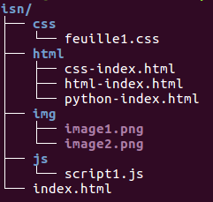
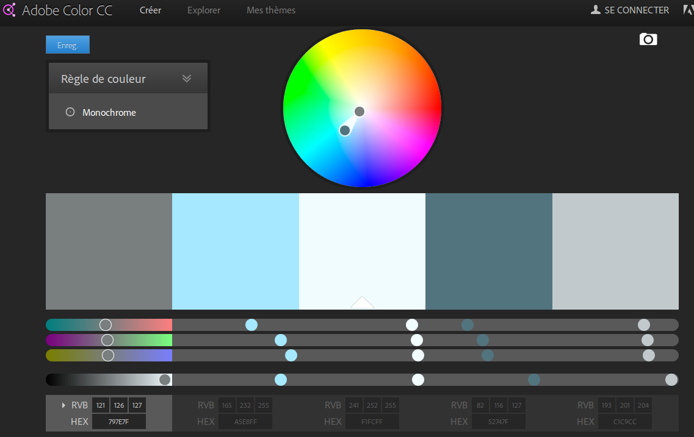

16/10/16 : Création de quelques pages presque vierges.
Je tape un peu de texte avec presque aucune mise en forme. Il faut quand même avoir une page html de base. La structure d'une page basique est décrite dans cet article.
J'ai aussi prévu une arborescence pour le classement des fichiers du site.
- index.html (page d'index prévue pour plus tard : pour l'instant c'est une juste porte d'ouverture sur le site).
- html (contient les fichiers html)
- index.html
- outils.html
- html-index.html
- etc...
- css
- contiendra les fichiers css utiles plus tard
- img
- contiendra les fichiers images utiles plus tard
- js
- contiendra les fichiers Javascripts ou JQuery utiles plus tard
*Edit : 12/04/17 : j'ajoute une image de l'arborescence (c'est plus parlant)

17/10/16 : Création des premiers fichiers css : "style-site1.css", "style-code.css".
J'ajoute un lien vers cette feuille de style sur toutes les pages déjà créées avec le code suivant placé dans l'en-tête des fichiers html.
Dans ce fichier, je me contente de mettre une couleur de fond jaune clair à l'ensemble de la page html avec le code suivant :
background-color:rgb(245, 240, 200);
}
Je crée aussi un fichier css pour la mise en forme du code html ou css. Ça risque d'être lourd à gérer, mais il faudra bien que j'arrive à présenter du code de façon "jolie" !
Pour l'instant, je crée des classes pour écrire de façon colorée les balises, les attributs, les sélecteurs, etc. de mon code.
Le code sera écrit dans une div de classe "code".
background-color: rgb(60, 55, 60);
color:rgb(185, 190, 180);
padding-left:10px;
padding-top: 5px;
padding-bottom: 5px;
margin-left: 30px;
width: 50%;
}
.balise{
color: rgb(210, 15, 90);
}
.attribut{
color: rgb(220, 150, 40);
}
18/10/16 : Développement du CSS.
Je commence à perdre un peu de temps à chercher une mise en forme css pas complètement moche.
Ce travail implique de rajouter quelques balises html dans les pages pour qu'elles soient mieux structurées pour pouvoir gérer la mise en forme.
Par exemple, j'ai ajouté une balise <div id="page"> qui englobe toutes les pages html, hormis le header et le footer : cette div contient donc le contenu d'une page.
21/10/16 : Dévelopement du site + Retour en haut de page + palette couleurs
Depuis quelques jours, je fais quelques tests de CSS : je détaillerai plus tard les choix que j'aurai arrếtés.
Aujourd'hui, j'ai écrit un peu de cours de html : les bases, quoi. Du coup la page "html" s'étoffe un peu et j'ai ressenti le besoin d'avoir un moyen de remonter vite en haut de page,
sans tout "scroller" à la souris. Une rapide recherche sur le Web me permet de trouver des solutions et de multiples scripts. Comme pour l'instant je ne veux pas me lancer dans le Javascript ou les Jqueries,
je me contente d'une solution plus simple : je positionne juste une image-lien (en forme de flèche vers le haut) de manière "fixed" (en CSS) qui vise un href="#" (càd haut de page) lorsqu'on clique dessus.
J'ai piqué une image toute faite sur internet, et j'ai juste ajouté une transparence avec Gimp. Tout ceci pourra être amélioré dans l'avenir.
Je rajoute le même mécanisme sur cette page, on voit donc l'image sur le côté (testez pour voir !).
Je recherche des outils pour trouver des palettes de couleurs harmonieuses. En voici une qui me plaît assez avec l'outil en ligne de chez Adobe color CC.

30/10/16 : Écriture du cours HTML + évolution du CSS
Pendant les derniers jours, j'ai poursuivi l'écriture du cours sur le langage HTML.
J'ai aussi un peu modifier les feuilles de styles pour la présentation générale du site. En particulier, j'ai récupéré les "vraies" couleurs de la coloration syntaxique de l'éditeur Atom avec l'outil Gcolor2 et j'ai ajouté une classe permettant de présenter le résulat d'un affichage de page Web sans mise en forme -- noir sur fond blanc --.
Mais aucun changement d'importance majeure dans la strucutre du site.
01/11/16 : MAJ de la Webographie
J'ai fait le tour des sites utiles que j'utilise de temps en temps et je les ai listés dans la page Webographie. Pratique !
02/11/16 : Affichage chrono ou antichronologique
Aujourd'hui, j'ai ajouté un brin d'interactivité sur cette page. Je voulais pouvoir afficher le contenu des articles du making-of de façon chronologique (événements les plus anciens qui apparaissent les premiers) ou anti-chronologique (on voit d'abord les articles les plus récents - affichage classique des articles de blogs).
Vous pouvez tester facilement la fonctionnalité implémentée en cliquant sur les 2 liens en haut de cette page.
Cela dit, ce n'est pas complètement immédiat à mettre en place. Ça fait appel à la "mise en page" flexbox du CSS3 et ça nécessite un peu de Javascript. Pour la partie CSS, ce n'est pas beaucoup plus compliqué que le reste, et pour la partie Javascript, j'ai utilisé en fait JQuery qui permet (si j'ai bien compris...) de faire du Javascript de façon plus aisée. Bref, le résultat fonctionne et c'est tant mieux.
Je n'ai pas le temps de détailler le code mis en place pour l'instant, mais j'essaierai de le faire plus tard. En attendant, un affichage du code source de la page permet de tout voir (le script est à la fin du document).
11/04/17 : Complément sur les couleurs numériques
J'écris quelques infos sur la façon de coder et nommer les couleurs avec le format RGB en paticulier, sur cette page.
12/04/17 : L'outil "tree" pour visualiser une arborescence
Je viens de découvrir l'outil tree qui s'installe dans un Terminal et qui permet d'obtenir l'arborescence d'un dossier de façon visuelle assez agréable. Ça peut être pratique pour présenter l'arborescnce de son site par exemple.
J'ai utilisé cette fonctionnalité pour créer l'image visible ici.
La commande s'utilise très simplement dans le Terminal (après avoir installé tree évidemment):
>> tree nom_repertoire # (pour lister complètement l'arborescence)
>> tree -d nom_repertoire # (pour lister seulement les dossiers)
>> man tree # (pour connaître toutes les otpions)
12/04/17 : Un bouton Retour dans la barre de navigation
Ajout d'un bouton Retour dans le menu de navigation de certaines pages du site. Cela permet simplement de revenir à la page précédente. Je pense que cela peut-être pratique pour les pages qui peuvent être chargées depuis plusieurs endroits du site (comme la page sur les couleurs par exemple).
Évidemment le bouton Retour de votre Navigateur préféré donne exactement le même résultat ! Ici, cela me permet juste d'utiliser une fonction Javascript dans un lien. La fonction history.go("-1") est assez explicite (le signe - est pour les pages visitées précédemment (jusqu'à -10)).
31/05/17 : Ajout de contenu
Je viens d'ajouter un point de cours sur la création de tableaux en HTML (voir) et un complément sur la mise en forme des tableaux et des liste en CSS (voir).